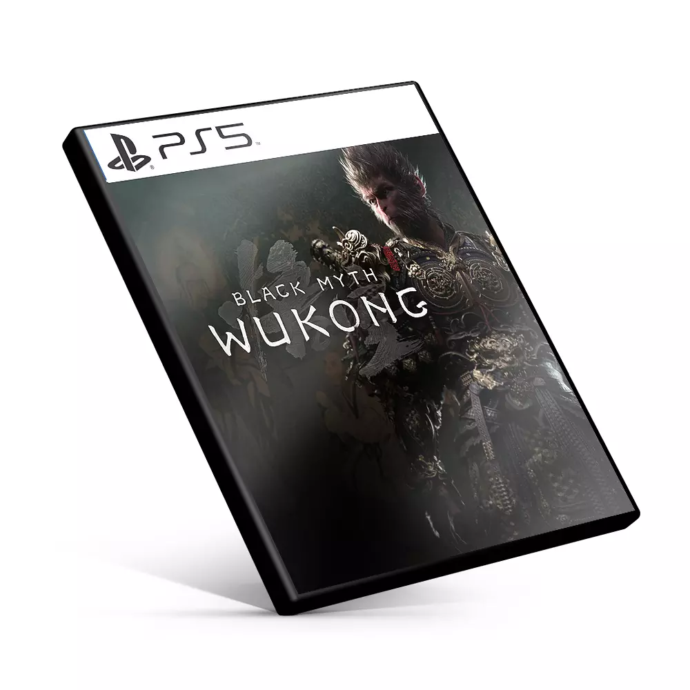
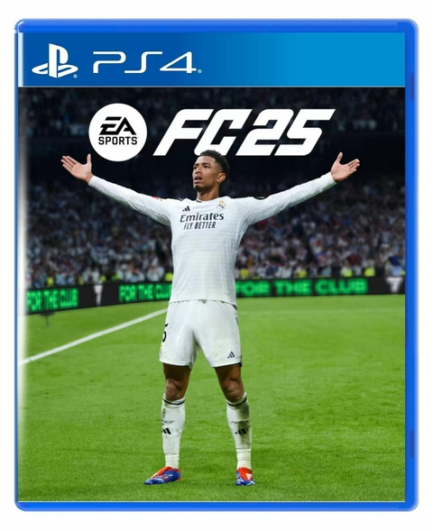

Aqui você em contra os melhores lançamentos de jogos !
Black Myth: Wukong é um jogo de RPG de ação desenvolvido pela Game Science, baseado no romance
chinês clássico do século 16, Journey to the West. A jogabilidade foi descrita como semelhante à de
jogos da série Souls e God of War.


Faça seu time jogar como os maiores do mundo com o FC IQ. A reformulação dos fundamentos táticos dá
mais controle estratégico e deixa a movimentação coletiva dos times mais realista. Já o novo modelo
de IA, alimentado por informações do mundo real, influencia as táticas de jogo por meio das novas
Funções de atleta.
As novas adições aos modos Carreira de Jogador e de Manager permitem que você viva os maiores
acontecimentos reais do esporte com Pontos de Início ao Vivo**; reescreva as histórias de ÍDOLOS do
passado com os times atuais em Carreira de Jogador e, pela primeira vez, desfrute de uma experiência
autêntica de Carreira Feminina, com controle total de um clube ou uma atleta das cinco maiores ligas
femininas.